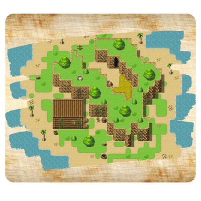
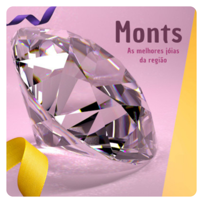
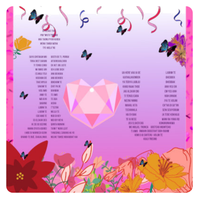
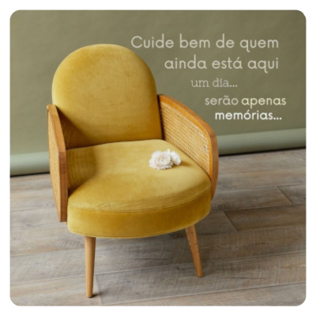
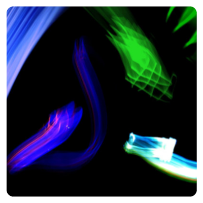
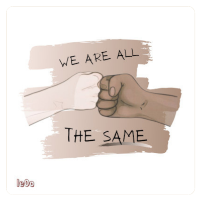

Mapa do jogo Viking Journey

Anúncio de joalheria solicitado por um cliente

Língua Universal Do amor
 Projeto criado para celebrar o Dia
dos Namorados de 2020
Imagem de Reflexão solicitada por um cliente
 Projeto criado a partir da manipulação de
imagens com intuito de reforçar os
cuidados e a atenção com a vida.
Batalha de Luzes
 Foto produzida com técnicas de
fotografia, utilizando luzes coloridas e
capturando o movimento das fontes de luz.
Somos Todos Iguais!
Projeto criado para design em camisa
Logo Contrariando

Projeto criado para um canal no youtube
Flowers Always Win Cannons

Projeto criado para trabalho em escola
sobre movimentos durante a ditadura militar.